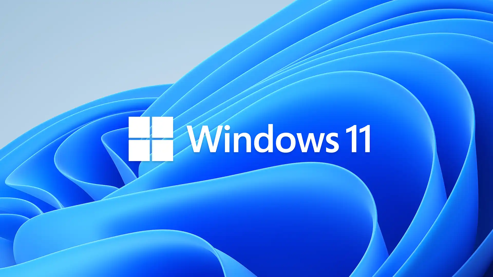

请访问原文链接：Windows 11 26H1 | 25H2 | 24H2 中文版、英文版 (x64、ARM64) 下载 (2026 年 6 月更新) 查看最新版。原创作品，转载请保留出处。
作者主页：sysin.org
全新推出 Windows 11
全新 Windows 体验，让您与热爱的人和事物离得更近。

Windows 11 版本信息
Windows 11 每年会进行一次功能更新，功能更新在日历年下半年发布，并附带对家庭版、专业版、专业工作站版和专业教育版的 24 个月支持，以及对 企业版和教育版的 36 个月支持。如需了解更多信息，请参阅 Windows 生命周期常见问题解答。
Windows 11 还在每月的第二个星期二发布每月安全更新。这些版本是累积的，包含所有以前的更新，让设备持续受到保护和保持高效。
如果你是 IT 管理员，并且想通过编程从此页面获取信息，请使用 Microsoft Graph 中的 Windows 更新 API。
Windows 11 目前版本
所有的日期都按照 ISO 8601 格式列出：YYYY-MM-DD
服务频道
| 版本 | 服务选项 | 上市日期 | OS build | 服务终止：家庭版、专业版、专业教育版和专业工作站版 | 服务终止：企业、教育、IoT 企业版和企业多会话 |
|---|---|---|---|---|---|
| 26H1 | 正式发布频道 | 2026-02-10 | 28000.1575 | 2028-03-14 | 2029-03-13 |
| 25H2 | 正式发布频道 | 2025-09-30 | 26200.6584 | 2027-10-12 | 2028-10-10 |
| 24H2 | 正式发布频道 | 2024-10-01 | 26100.1742 | 2026-10-13 | 2027-10-12 |
| 23H2 | 正式发布频道 | 2023-10-31 | 22631.2428 | 2025-11-11 | 2026-11-10 |
| 22H2 | 正式发布频道 | 2022-09-20 | 22621.521 | 2024-10-08 | 2025-10-14 |
| 21H2 | 正式发布频道 | 2021-10-04 | 22000.194 | 2023-10-08 | 2024-10-08 |
企业版和 IoT 企业版 LTSC 版本
| Version | 服务选项 | 上市日期 | OS build | 主要支持结束日期 | 外延支持结束日期 |
|---|---|---|---|---|---|
| 24H2 | 长期服务频道 (LTSC) | 2024-10-01 | 26100.1742 | 2029-10-09 | 2034-10-10 |
备注：OS build 点后位是初始版本，非即时更新。
最新发布
此次发布更新了什么？答：版本号，当然还有寂寞😄。
为什么叫三哥？答（最新解释）：盖茨风格、麦德龙风格和库克风格三合一😄。
👉 How to get the Windows 11 2023 Update (October 31, 2023)
👉 Available today: The Windows 11 2022 Update (September 20, 2022)
不再跟进 Insider，按照月更发布正式版。
👉 Windows 11: A new era for the PC begins today
👉 Announcing Windows 11 Insider Preview Build 22471
👉 Announcing Windows 11 Insider Preview Build 22468
👉 Announcing Windows 11 Insider Preview Build 22463
👉 Announcing Windows 11 Insider Preview Build 22000.194
👉 Announcing Windows 11 Insider Preview Build 22458
👉 Announcing Windows 11 Insider Preview Build 22454
👉 Announcing Windows 11 Insider Preview Build 22000.184
👉 Announcing Windows 11 Insider Preview Build 22449
👉 Windows 11 将于 10 月 5 日发布正式版
Windows 11 available on October 5
👉 Announcing Windows 11 Insider Preview Build 22000.168
👉 微软发布首个 Windows 11 官方 iso
2021 年 8 月 20 日，今天微软发布了首个 Windows 11 ISO 映像，之前都是通过第三方软件制作的，该版本即上周发布的 Windows 11 Insider Preview Build 22000.132，已经加入 Windows 预览体验计划 的用户可以下载。本站提供本地下载，参看文末链接。
👉 Announcing Windows 11 Insider Preview Build 22000.160
👉 Announcing Windows 11 Insider Preview Build 22000.132
👉 Announcing Windows 11 Insider Preview Build 22000.120
👉 Announcing Windows 11 Insider Preview Build 22000.100
👉 Announcing Windows 11 Insider Preview Build 22000.71
👉 Announcing Windows 11 Insider Preview Build 22000.65
全新推出 Windows 11
全新 Windows 体验，让您与热爱的人和事物离得更近。

获得全新视角
Windows 11 提供一个让人平静而富有创意的空间，全新体验引导您全力追逐热爱。从焕然一新的开始菜单，到与您关心的人、关注的消息、游戏和内容建立连接的新方式 (sysin)，Windows 11 提供了一个场所，让您得以自由地思索、表达和创造。

最大化生产力
利用贴靠布局等工具、桌面以及更为直观的全新体验轻松访问所有应用以及进行多任务处理。

新的连接方式
使用 Microsoft Teams，直接从桌面即可立即连接到您想要联系的人。免费通话或聊天 — 无论对方使用什么设备。

您的内容，您来组织
借助 Microsoft Edge 和可选择使用的众多小组件，您可以快速及时地了解您最关心的资讯、信息和娱乐内容。在新版 Microsoft Store 中轻松找到您所需的应用和爱看的节目。

游戏时间，随时随地
全新 Windows 提供出色的游戏体验，可畅玩众多游戏大作。

不一定适合每个人的电脑
全新 Windows 可在相当广泛的设备上运行 (sysin)，同时微软的合作伙伴也在致力于在触控功能、触控笔和语音等方面为您带来创新技术，让您轻松找到对您而言理想而又经济实惠的设备。

找到适合您的电脑
现在需要新电脑？这里是当 Windows 11 推出时可以免费升级的一些 Windows 10 电脑。
将您的文件和照片从旧电脑上备份到 OneDrive，那么在转移到新电脑时就会容易得多。

系统要求
Windows 11 现已发布，更新正当时。
检查兼容性
使用电脑健康状况检查应用来查看您当前的电脑是否满足运行 Windows 11 的要求。如果满足，则可在 Windows 11 推出时进行免费升级。

最低系统要求
系统要求这些是在电脑上安装 Windows 11 的最低系统要求。如果您的设备不满足这些要求，您可能无法在设备上安装 Windows 11，建议您考虑购买一台新电脑。如果您不确定您的电脑是否满足这些要求，可以咨询您的原始设备制造商 (OEM)；如果您的设备已经在运行 Windows 10，您可以使用电脑健康状况检查应用来评估兼容性。请注意，此应用不会检查显卡或显示器，因为大多数的兼容设备都能满足以下列出的要求。您的设备必须已安装 Windows 10 的 2004 或更高版本，才能升级。可在‘设置 > 更新和安全’中的 Windows 更新功能中获取免费更新。
| 项目 | 描述 |
|---|---|
| 处理器 | 1 GHz 或更快的支持 64 位的处理器（双核或多核）或系统单芯片 (SoC)。 |
| 内存 | 4 GB。 |
| 存储 | 64 GB 或更大的存储设备，注：有关详细信息，请参见以下“关于保持 Windows 11 最新所需存储空间的更多信息”。 |
| 系统固件 | 支持 UEFI 安全启动。请在此处查看关于如何启用电脑以满足这一要求的说明。 |
| TPM | 受信任的平台模块 (TPM) 2.0 版本。请在此处查看关于如何启用电脑以满足这一要求的说明。 |
| 显卡 | 支持 DirectX 12 或更高版本，支持 WDDM 2.0 驱动程序。 |
| 显示器 | 对角线长大于 9 英寸的高清 (720p) 显示屏，每个颜色通道为 8 位。 |
| 电脑健康检查互联网连接和 Microsoft 账户 | Windows 11 家庭版要求具有互联网连接和 Microsoft 账户。将设备切换出 Windows 11 家庭版 S 模式也需要有互联网连接。在此处进一步了解 S 模式。所有的 Windows 11 版本都需要联网才能执行更新，以及下载和利用某些功能。有些功能需要使用 Microsoft 账户。 |
某些功能需要特定硬件支持。运行某些应用程序所需满足的系统要求可能高于 Windows 11 的最低设备规格要求。检查设备与您想要安装应用程序的兼容情况。所需的设备存储空间将根据实际的应用程序和更新而有所不同。更高端、更强大的电脑性能也较高。以后或更新时可能会有其它的要求。
如何获得更新 - 现在是购买新 PC 的最佳时机
有了本次更新中所有令人兴奋的新功能，现在是购买新 PC 的最佳时机。微软很自豪能够在整个生态系统的各种设备上提供 Windows 11。体验更新魔力的最佳方式是使用 Surface 或微软出色的生态系统合作伙伴 Acer、ASUS、Dell、HP、Lenovo、Samsung 和 Razer 提供的新 PC。一些最新的新电脑包括：
- Acer TravelMate Spin P6 - 售价 1499 美元，Acer TravelMate Spin P6 是出色的商务旅行伴侣——具有军用级耐用性、防泼溅键盘和技术，可改善您的 Microsoft Teams 会议。
- ASUS ExpertBook B9 - ASUS ExpertBook B9 起价约为 1699 美元，采用轻巧耐用的镁合金设计，触摸板上的 LED 发光数字键盘非常适合处理数字。
- Dell Latitude 7330 - 配置起价为 1749 美元，Dell Latitude 7330 提供卓越的连接和协作体验 - 由最新的第 12 代 Intel Core 处理器提供支持，并配备增强型 FHD 摄像头、WiFi-6E 和可选的 4G LTE 连接。
- HP Dragonfly Folio G3 - 由 Intel vPro 和第 12 代 Intel Core 处理器提供支持，HP Dragonfly Folio G3 采用前拉式设计，可从笔记本电脑过渡到平板电脑，从而轻松创建和捕捉创意。起价 2379 美元。
- 联想 ThinkPad X1 Fold - 下一代联想 ThinkPad X1 Fold，起价 2499 美元，是一款时尚且性能全面的 16.3 英寸可折叠 PC - 具有 100% 可回收编织高性能织物后盖和高达 32GB 的内存选项。
- 三星 Galaxy Book Go 5G - 让您始终保持联系，仅需 609 美元。Galaxy Book Go 5G 旨在在没有风扇的情况下保持凉爽，采用轻巧的设计，并由先进、节能的 Snapdragon 8cx Gen 2 计算平台提供支持。即时开启性能可减少耗电量并使电池充电时间更长，您可以在任何地方高效工作。
- Surface Laptop Studio - 使用微软功能最强大的 Surface 笔记本电脑，从笔记本电脑无缝过渡到娱乐就绪舞台，再到便携式创意画布 - 起价 1,599 美元。
- Razer Blade 14 - 配备超快的 AMD Ryzen 9 6900HX 处理器和最高 NVIDIA GeForce RTX 3080Ti 显卡，可在旅途中实现一些最强大的游戏。Blade 14 拥有流畅的 QHD 165Hz 显示屏和改进的 DDR5 内存，让玩家可以充分利用内部强大的硬件，起价仅为 1999 美元。
更新的可用性从今天开始。现在就去百度网盘直接下载吧！
⬇下载地址
本文仅提供官方安装介质的获取方式。评估版可免费试用 30 天，仅供测试、学习和研究用途，请勿用于生产环境。
全部为官方原版 iso。
Windows 11, version 21H2
Windows 11, version 21H2 released Oct 2021 - 22000.194：
百度网盘链接：https://pan.baidu.com/s/1DLSBU5WomLXjzS2Dd9D9Yg?pwd=qnqz
简体中文 - 消费者版（Build 22000.194）
家庭版、家庭单语言版、教育版、专业版、专业教育版、专业工作站版
文件名：zh-cn_windows_11_consumer_editions_x64_dvd_904f13e4.iso
SHA256: 47b8d4105bf48ba7a2827d037ccf1635035afefa48e168045f7b9d76f54dbe8f简体中文 - 商业版（Build 22000.194）
教育版、企业版、专业版、专业教育版、专业工作站版
文件名：zh-cn_windows_11_business_editions_x64_dvd_f5f6bcbd.iso
SHA256: 81c007e119bb0cf0c58abea9d9578b4c09935f929e609fb3954aab43bcb83269繁體中文 - 消費者版 （Build 22000.194）
家庭版、家庭單語言版、教育版、專業版、專業教育版、專業工作站版
檔案名稱：zh-tw_windows_11_consumer_editions_x64_dvd_d3d1923f.iso繁體中文 - 商業版（Build 22000.194）
教育版、企業版、專業版、專業教育版、專業工作站版
檔案名稱：zh-tw_windows_11_business_editions_x64_dvd_de815683.isoEnglish - Consumer (Build 22000.194)
Home, Home N, Home Single Language, Education, Education N, Pro, Pro N, Pro Education, Pro Education N, Pro for Workstations, Pro N for Workstations
Filename: en-us_windows_11_consumer_editions_x64_dvd_bd3cf8df.iso
SHA256: 667bd113a4deb717bc49251e7bdc9f09c2db4577481ddfbce376436beb9d1d2fEnglish - Business (Build 22000.194)
Education, Education N, Enterprise, Enterprise N, Pro, Pro N, Pro Education, Pro Education N, Pro for Workstations, Pro N for Workstations
Filename: en-us_windows_11_business_editions_x64_dvd_3a304c08.iso
SHA256: 6939b236e6976f6eeaea045de805801f312700300c8359d17c0abf31b35371e3
历史版本已清理。
Windows 11, version 21H2 中文版、英文版 (Arm64, x64) 下载 (updated Oct 2023)：
- 百度网盘链接：https://pan.baidu.com/s/1Xy1aIsOEhinKQ4R-RuagSg?pwd=pynd
- 简体中文 - 商业版（教育版、企业版、专业版、专业教育版、专业工作站版）
- 繁體中文 - 商業版（教育版、企業版、專業版、專業教育版、專業工作站版）
- English - Business (Education, Enterprise, Pro, Pro Education, Pro for Workstations)
Windows 11, version 22H2
Windows 11, version 22H2 (released Sep 2022) Arm64, x64：
百度网盘链接：https://pan.baidu.com/s/1CZQVu7B4SYBL1hTXZEbyMQ?pwd=48cj
| Image | Language | Architecture | Size | SHA256 |
|---|---|---|---|---|
| SW_DVD9_Win_Pro_11_22H2_64ARM_ChnSimp_Pro_Ent_EDU_N_MLF_X23-12755.ISO | 简体中文 | ARM64 (sysin) | 5454 MB | 6C308F4139F9938E369BC987CBCC983EC293506AB29C736ABDD8284CEBBC5BF7 |
| SW_DVD9_Win_Pro_11_22H2_64ARM_ChnTrad_Pro_Ent_EDU_N_MLF_X23-12784.ISO | 繁體中文 | ARM64 (sysin) | 5426 MB | EB721E2F2B08DEDE965E18369926E9F3FD868728EB7A38A0B3909A524D791F88 |
| SW_DVD9_Win_Pro_11_22H2_64ARM_English_Pro_Ent_EDU_N_MLF_X23-12756.ISO | English | ARM64 (sysin) | 5198 MB | 180C0E977B960D55DDA73F5D8E0F3094B2E27BD82C459B880CE5F51C3C49216A |
| SW_DVD9_Win_Pro_11_22H2_64BIT_ChnSimp_Pro_Ent_EDU_N_MLF_X23-12741.ISO | 简体中文 | x64 (sysin) | 5166 MB | D74D24A00F83E77A189BE6BCB2E23FAD5BABC29F576E810C43282CE683F8B048 |
| SW_DVD9_Win_Pro_11_22H2_64BIT_ChnTrad_Pro_Ent_EDU_N_MLF_X23-12747.ISO | 繁體中文 | x64 (sysin) | 5139 MB | 4C691D1C01CCB40275BAF979DB1A9CEC98F7DA8A8DFA59B4D2366EEC76084758 |
| SW_DVD9_Win_Pro_11_22H2_64BIT_English_Pro_Ent_EDU_N_MLF_X23-12720.ISO | English | x64 (sysin) | 5120 MB | 6E3A101C6E97D8E68F576DDBCED9BE34CBA949F750DA3C83F7D4791401068C9F |
历史版本已清理。
Windows 11, version 22H2 (updated Aug 2024) Arm64, x64：
x64 百度网盘链接：https://pan.baidu.com/s/1gBWl6eJr70I5Ly0I3kuGOA?pwd=zsi9
Arm64 百度网盘链接：https://pan.baidu.com/s/1N5zASW_e93eD2nKA7hpW9A?pwd=dnnb
English - Business (Education, Enterprise, Pro, Pro Education, Pro for Workstations)
简体中文 - 商业版（教育版、企业版、专业版、专业教育版、专业工作站版）
繁體中文 - 商業版（教育版、企業版、專業版、專業教育版、專業工作站版）
Windows 11, version 23H2
Windows 11, version 23H2 (released Oct 2023) Arm64, x64：
百度网盘链接：https://pan.baidu.com/s/11gqFYR2TlItDFCd8PjS37A?pwd=eof9
- English - Business (Education, Enterprise, Pro, Pro Education, Pro for Workstations)
- 简体中文 - 商业版（教育版、企业版、专业版、专业教育版、专业工作站版）
- 繁體中文 - 商業版（教育版、企業版、專業版、專業教育版、專業工作站版）
| Image | Language | Architecture | Size | SHA256 |
|---|---|---|---|---|
| SW_DVD9_Win_Pro_11_23H2_Arm64_ChnSimp_Pro_Ent_EDU_N_MLF_X23-59518.ISO | 简体中文 | ARM64 (sysin) | 5454 MB | 2AFAF2B74EE7213B37EB9EF9E1D9B27208D9893ECE6A29045FE124E06F77F340 |
| SW_DVD9_Win_Pro_11_23H2_Arm64_ChnTrad_Pro_Ent_EDU_N_MLF_X23-59551.ISO | 繁體中文 | ARM64 (sysin) | 5426 MB | EA303FF8E37DF9914C6A92ED306F6C3C07708AB0FB764655981A30B0D8A9DA49 |
| SW_DVD9_Win_Pro_11_23H2_Arm64_English_Pro_Ent_EDU_N_MLF_X23-59519.ISO | English | ARM64 (sysin) | 5198 MB | 2BF0FD1D5ABD267CD0AE8066FEA200B3538E60C3E572428C0EC86D4716B61CB7 |
| SW_DVD9_Win_Pro_11_23H2_64BIT_ChnSimp_Pro_Ent_EDU_N_MLF_X23-59583.ISO | 简体中文 | x64 (sysin) | 5166 MB | B4F4CAA4BA52B4BCD59072D5361DBDB287856C48CE7C9EE39008DC294F3111DF |
| SW_DVD9_Win_Pro_11_23H2_64BIT_ChnTrad_Pro_Ent_EDU_N_MLF_X23-59589.ISO | 繁體中文 | x64 (sysin) | 5139 MB | 13DC9354594863E7DD5C3FBDBEAE81AB79E3F6A26507274D3F5684BAC4115266 |
| SW_DVD9_Win_Pro_11_23H2_64BIT_English_Pro_Ent_EDU_N_MLF_X23-59562.ISO | English | x64 (sysin) | 5120 MB | C5AAEFE5E1571017CA571F072F6CB4922668D98702D1ABAD34B078682E09703A |
历史版本已清理。
Windows 11, version 23H2 (updated Sep 2025) Arm64, x64：
- x64 百度网盘链接：https://pan.baidu.com/s/1_5Qh3Qp646kSYF6TWQ1wdw?pwd=5fmb
- Arm64 百度网盘链接：https://pan.baidu.com/s/1szEAboejshH8KWP3i4_DZw?pwd=rwz2
Windows 11, version 23H2 (updated Oct 2025) x64：
x64 百度网盘链接：https://pan.baidu.com/s/17sOh4P9-q6beFX07gsrQ0g?pwd=cz27
English - Business (Education, Enterprise, Pro, Pro Education, Pro for Workstations)
简体中文 - 商业版（教育版、企业版、专业版、专业教育版、专业工作站版）
繁體中文 - 商業版（教育版、企業版、專業版、專業教育版、專業工作站版）
Windows 11, version 24H2
Windows 11, version 24H2 & LTSC 2024 (updated Oct 2024)：
Windows 11 Enterprise LTSC 2024
- en-us_windows_11_enterprise_ltsc_2024_x64_dvd_965cfb00.iso
- zh-cn_windows_11_enterprise_ltsc_2024_x64_dvd_cff9cd2d.iso
- zh-tw_windows_11_enterprise_ltsc_2024_x64_dvd_6287d84d.iso
Windows 11 IoT Enterprise LTSC 2024
- en-us_windows_11_iot_enterprise_ltsc_2024_arm64_dvd_ec517836.iso
- en-us_windows_11_iot_enterprise_ltsc_2024_x64_dvd_f6b14814.iso
Windows 11, version 24H2 x64
- en-us_windows_11_business_editions_version_24h2_x64_dvd_59a1851e.iso
- zh-cn_windows_11_business_editions_version_24h2_x64_dvd_5f9e5858.iso
- zh-tw_windows_11_business_editions_version_24h2_x64_dvd_a9b30de5.iso
Windows 11, version 24H2 Arm64
- en-us_windows_11_business_editions_version_24h2_arm64_dvd_ad92e9d8.iso
- zh-cn_windows_11_business_editions_version_24h2_arm64_dvd_9696a5e8.iso
- zh-tw_windows_11_business_editions_version_24h2_arm64_dvd_99a82a4f.iso
以上为 VSS 商业版，实际文件等同于 MAC 版本，只是文件命名不同，校验值完全相同。以下为 MAC 版本文件列表。
Windows 11, version 24H2 x64
- SW_DVD9_Win_Pro_11_24H2_64BIT_English_Pro_Ent_EDU_N_MLF_X23-69812.ISO
- SW_DVD9_Win_Pro_11_24H2_64BIT_ChnSimp_Pro_Ent_EDU_N_MLF_X23-69833.ISO
- SW_DVD9_Win_Pro_11_24H2_64BIT_ChnTrad_Pro_Ent_EDU_N_MLF_X23-69839.ISO
Windows 11, version 24H2 Arm64
- SW_DVD9_Win_Pro_11_24H2_Arm64_English_Pro_Ent_EDU_N_MLF_X23-69850.ISO
- SW_DVD9_Win_Pro_11_24H2_Arm64_ChnSimp_Pro_Ent_EDU_N_MLF_X23-69849.ISO
- SW_DVD9_Win_Pro_11_24H2_Arm64_ChnTrad_Pro_Ent_EDU_N_MLF_X23-69878.ISO
历史版本已清理。
Windows 11, version 24H2 (updated Mar 2026) Arm64, x64：
- x64 百度网盘链接：https://pan.baidu.com/s/17zdInecS1vym2sjBcbkD9g?pwd=h2rf
- Arm64 百度网盘链接：https://pan.baidu.com/s/1llfp38w9JVhwol9IfpNWPg?pwd=4ij7
Windows 11, version 24H2 (Updated Apr 2026) Arm64, x64：
x64 百度网盘链接：https://pan.baidu.com/s/1Uzq71YsGdX-daZv_cWCy7Q?pwd=9rp8
- en-us_windows_11_business_editions_version_24h2_updated_april_2026_x64_dvd_1f7f4c75.iso
- zh-cn_windows_11_business_editions_version_24h2_updated_april_2026_x64_dvd_44b08914.iso
- zh-tw_windows_11_business_editions_version_24h2_updated_april_2026_x64_dvd_3c0a341f.iso
Arm64 百度网盘链接：https://pan.baidu.com/s/1Ycl0k6WNKhGSGao-CeU2Hw?pwd=hudp
- en-us_windows_11_business_editions_version_24h2_updated_april_2026_arm64_dvd_143f89f6.iso
- zh-cn_windows_11_business_editions_version_24h2_updated_april_2026_arm64_dvd_dc62d0ca.iso
- zh-tw_windows_11_business_editions_version_24h2_updated_april_2026_arm64_dvd_2049ccc0.iso
Windows 11, version 24H2 (Updated May 2026) Arm64, x64：
x64 百度网盘链接：https://pan.baidu.com/s/1mh2DaBxtyVEvpsamF65_XA?pwd=888m
- en-us_windows_11_business_editions_version_24h2_updated_may_2026_x64_dvd_bd16f61d.iso
- zh-cn_windows_11_business_editions_version_24h2_updated_may_2026_x64_dvd_5ef63ed0.iso
- zh-tw_windows_11_business_editions_version_24h2_updated_may_2026_x64_dvd_174840d0.iso
Arm64 百度网盘链接：https://pan.baidu.com/s/1V2cz2E_1iJoNblUv-DyCGg?pwd=yu1t
- en-us_windows_11_business_editions_version_24h2_updated_may_2026_arm64_dvd_0af0f36a.iso
- zh-cn_windows_11_business_editions_version_24h2_updated_may_2026_arm64_dvd_d487e9fb.iso
- zh-tw_windows_11_business_editions_version_24h2_updated_may_2026_arm64_dvd_cddff308.iso
Windows 11, version 24H2 (Updated Jun 2026) Arm64, x64：
x64 百度网盘链接：https://pan.baidu.com/s/11ijXVwi8Cg3LCi66BgYBeA?pwd=3zmd
- en-us_windows_11_business_editions_version_24h2_updated_june_2026_x64_dvd_874abeb5.iso
- zh-cn_windows_11_business_editions_version_24h2_updated_june_2026_x64_dvd_a55a638a.iso
- zh-tw_windows_11_business_editions_version_24h2_updated_june_2026_x64_dvd_f7d96b6b.iso
Arm64 百度网盘链接：https://pan.baidu.com/s/13JbZ6KcX_-qVVT8ve0afHQ?pwd=xtwx
- en-us_windows_11_business_editions_version_24h2_updated_june_2026_arm64_dvd_4f838ded.iso
- zh-cn_windows_11_business_editions_version_24h2_updated_june_2026_arm64_dvd_00daf0e0.iso
- zh-tw_windows_11_business_editions_version_24h2_updated_june_2026_arm64_dvd_67a0ee47.iso
文件名对应版本：
- English - Business (Education, Enterprise, Pro, Pro Education, Pro for Workstations)
- 简体中文 - 商业版（教育版、企业版、专业版、专业教育版、专业工作站版）
- 繁體中文 - 商業版（教育版、企業版、專業版、專業教育版、專業工作站版）
本文仅提供安装介质的获取方式。评估版可免费试用 30 天，仅供测试、学习和研究用途，请勿用于生产环境。
Windows 11, version 25H2
Windows 11, version 25H2 (Released Sep 2025)：
Windows 11 IoT Enterprise 25H2 (English only)
- en-us_windows_11_iot_enterprise_version_25h2_arm64_dvd_59e0d737.iso
- en-us_windows_11_iot_enterprise_version_25h2_x64_dvd_67098cd6.iso
Windows 11, version 25H2 x64
- en-us_windows_11_business_editions_version_25h2_x64_dvd_41c521e7.iso
- zh-cn_windows_11_business_editions_version_25h2_x64_dvd_22759158.iso
- zh-tw_windows_11_business_editions_version_25h2_x64_dvd_fc876202.iso
Windows 11, version 25H2 Arm64
- en-us_windows_11_business_editions_version_25h2_arm64_dvd_8afc9b39.iso
- zh-cn_windows_11_business_editions_version_25h2_arm64_dvd_028aff26.iso
- zh-tw_windows_11_business_editions_version_25h2_arm64_dvd_34dac6f1.iso
以上为 VSS 商业版，实际文件等同于 MAC 版本。以下为 MAC 版本文件列表。
Windows 11, version 25H2 x64
- SW_DVD9_Win_Pro_11_25H2_64BIT_English_Pro_Ent_EDU_N_MLF_X24-13075.ISO
- SW_DVD9_Win_Pro_11_25H2_64BIT_ChnSimp_Pro_Ent_EDU_N_MLF_X24-13096.ISO
- SW_DVD9_Win_Pro_11_25H2_64BIT_ChnTrad_Pro_Ent_EDU_N_MLF_X24-13102.ISO
Windows 11, version 25H2 Arm64
- SW_DVD9_Win_Pro_11_25H2_Arm64_English_Pro_Ent_EDU_N_MLF_X24-13111.ISO
- SW_DVD9_Win_Pro_11_25H2_Arm64_ChnSimp_Pro_Ent_EDU_N_MLF_X24-13110.ISO
- SW_DVD9_Win_Pro_11_25H2_Arm64_ChnTrad_Pro_Ent_EDU_N_MLF_X24-13139.ISO
Windows 11, version 25H2 (updated Oct 2025) Arm64, x64：
- x64 百度网盘链接：https://pan.baidu.com/s/19YZ7bMHfbe2JPWfT7z85XA?pwd=3tkb
- Arm64 百度网盘链接：https://pan.baidu.com/s/19YZ7bMHfbe2JPWfT7z85XA?pwd=3tkb
历史版本已清理。
Windows 11, version 25H2 (updated Mar 2026) Arm64, x64：
- x64 百度网盘链接：https://pan.baidu.com/s/11kkTLteNF03y9Vp9xJn0UQ?pwd=vj3s
- Arm64 百度网盘链接：https://pan.baidu.com/s/1gim2W7IHG7tJYjE6GrQ9wg?pwd=p26w
Windows 11, version 25H2 (Updated Apr 2026) Arm64, x64：
x64 百度网盘链接：https://pan.baidu.com/s/1ZddOkb4S1zh4o6KT4HI9wg?pwd=1ksa
- en-us_windows_11_business_editions_version_25h2_updated_april_2026_x64_dvd_c6b7c277.iso
- zh-cn_windows_11_business_editions_version_25h2_updated_april_2026_x64_dvd_a69989f0.iso
- zh-tw_windows_11_business_editions_version_25h2_updated_april_2026_x64_dvd_5f81177b.iso
Arm64 百度网盘链接：https://pan.baidu.com/s/1DVJWtrMIrA4hZC7MOeAMEg?pwd=vkhb
- en-us_windows_11_business_editions_version_25h2_updated_april_2026_arm64_dvd_f7877811.iso
- zh-cn_windows_11_business_editions_version_25h2_updated_april_2026_arm64_dvd_7d4c6c31.iso
- zh-tw_windows_11_business_editions_version_25h2_updated_april_2026_arm64_dvd_d9a50ef5.iso
Windows 11, version 25H2 (Updated May 2026) Arm64, x64：
x64 百度网盘链接：https://pan.baidu.com/s/1Pi8y6etmSuRd6RBy5IiwAw?pwd=uek6
- en-us_windows_11_business_editions_version_25h2_updated_may_2026_x64_dvd_b0a33d61.iso
- zh-cn_windows_11_business_editions_version_25h2_updated_may_2026_x64_dvd_4e896038.iso
- zh-tw_windows_11_business_editions_version_25h2_updated_may_2026_x64_dvd_04d3f3c5.iso
Arm64 百度网盘链接：https://pan.baidu.com/s/1hmGqpq9_VM7Tywpt7a33GA?pwd=gqbm
- en-us_windows_11_business_editions_version_25h2_updated_may_2026_arm64_dvd_0c8045d3.iso
- zh-cn_windows_11_business_editions_version_25h2_updated_may_2026_arm64_dvd_877177b7.iso
- zh-tw_windows_11_business_editions_version_25h2_updated_may_2026_arm64_dvd_d7fea9b6.iso
Windows 11, version 25H2 (Updated Jun 2026) Arm64, x64：
x64 百度网盘链接：https://pan.baidu.com/s/1cKLX1UvFqT7jTUNkyCyjQw?pwd=5qyu
- en-us_windows_11_business_editions_version_25h2_updated_june_2026_x64_dvd_e7cb77c9.iso
- zh-cn_windows_11_business_editions_version_25h2_updated_june_2026_x64_dvd_d0e09c94.iso
- zh-tw_windows_11_business_editions_version_25h2_updated_june_2026_x64_dvd_544052ea.iso
Arm64 百度网盘链接：https://pan.baidu.com/s/1EChNm9b9Og0Ud26CQDCwYg?pwd=rhbc
- en-us_windows_11_business_editions_version_25h2_updated_june_2026_arm64_dvd_23e3aeb3.iso
- zh-cn_windows_11_business_editions_version_25h2_updated_june_2026_arm64_dvd_669c2513.iso
- zh-tw_windows_11_business_editions_version_25h2_updated_june_2026_arm64_dvd_f3ebe2ce.iso
文件名对应版本：
- English - Business (Education, Enterprise, Pro, Pro Education, Pro for Workstations)
- 简体中文 - 商业版（教育版、企业版、专业版、专业教育版、专业工作站版）
- 繁體中文 - 商業版（教育版、企業版、專業版、專業教育版、專業工作站版）
本文仅提供安装介质的获取方式。评估版可免费试用 30 天，仅供测试、学习和研究用途，请勿用于生产环境。
Windows 11, version 26H1
💡 笔者提示：26H1 不是 25H2 的替代。运行 Windows 11 版本 26H1 的设备将无法在 2026 年下半年更新到下一个年度功能更新（26H2）。
Windows 11版本 26H1 可实现下一代芯片（第一批设备将推出 Qualcomm Snapdragon® X2 系列处理器）和硬件创新，使电脑生态系统能够为你带来卓越的性能和电池使用时间的 Windows 设备。
Windows 11, version 26H1 (released Feb 2026) Arm64, x64：
x64 百度网盘链接：https://pan.baidu.com/s/1z1X-IsdRJgTCmUzuxRxurg?pwd=8d9e
- en-us_windows_11_business_editions_version_26h1_x64_dvd_s18ddd107.iso
- en-us_windows_11_consumer_editions_version_26h1_x64_dvd_s5208fe5b.iso
- zh-cn_windows_11_business_editions_version_26h1_x64_dvd_sc6d1a670.iso
- zh-cn_windows_11_consumer_editions_version_26h1_x64_dvd_s02f4247d.iso
- zh-tw_windows_11_business_editions_version_26h1_x64_dvd_s4addb3b9.iso
- zh-tw_windows_11_consumer_editions_version_26h1_x64_dvd_s000b0cb6.iso
Arm64 百度网盘链接：https://pan.baidu.com/s/1ZVt0sp_uUhfQyEGkioIeHA?pwd=tmkd
- en-us_windows_11_business_editions_version_26h1_arm64_dvd_se4e55671.iso
- en-us_windows_11_consumer_editions_version_26h1_arm64_dvd_s75375ff3.iso
- zh-cn_windows_11_business_editions_version_26h1_arm64_dvd_s06885171.iso
- zh-cn_windows_11_consumer_editions_version_26h1_arm64_dvd_s900d64ce.iso
- zh-tw_windows_11_business_editions_version_26h1_arm64_dvd_s70e0c828.iso
- zh-tw_windows_11_consumer_editions_version_26h1_arm64_dvd_s312a48a9.iso
Windows 11, version 26H1 (updated Mar 2026) Arm64, x64：
- x64 百度网盘链接：https://pan.baidu.com/s/19e5TpPlNfb1Cdn9gOwpq2A?pwd=9dk6
- Arm64 百度网盘链接：https://pan.baidu.com/s/1TftnQlk4lMjOknb79-Ig7A?pwd=uvhv
Windows 11, version 26H1 (Updated Apr 2026) Arm64, x64：
x64 百度网盘链接：https://pan.baidu.com/s/1S1-HlUjEB-pz2WobScEINg?pwd=juxt
- en-us_windows_11_business_editions_version_26h1_updated_april_2026_x64_dvd_ac820afd.iso
- zh-cn_windows_11_business_editions_version_26h1_updated_april_2026_x64_dvd_ac820afd.iso
- zh-tw_windows_11_business_editions_version_26h1_updated_april_2026_x64_dvd_69ae07e3.iso
Arm64 百度网盘链接：https://pan.baidu.com/s/1SCW6TIZj8dlsES-SmczkRw?pwd=b8hs
- en-us_windows_11_business_editions_version_26h1_updated_april_2026_arm64_dvd_ac820afd.iso
- zh-cn_windows_11_business_editions_version_26h1_updated_april_2026_arm64_dvd_ac820afd.iso
- zh-tw_windows_11_business_editions_version_26h1_updated_april_2026_arm64_dvd_ac820afd.iso
Windows 11, version 26H1 (Updated May 2026) Arm64, x64：
x64 百度网盘链接：https://pan.baidu.com/s/1CVPt6PY8JJ22ggoQshRsNQ?pwd=wi76
- en-us_windows_11_business_editions_version_26h1_updated_may_2026_x64_dvd_b733cc65.iso
- zh-cn_windows_11_business_editions_version_26h1_updated_may_2026_x64_dvd_b733cc65.iso
- zh-tw_windows_11_business_editions_version_26h1_updated_may_2026_x64_dvd_b733cc65.iso
Arm64 百度网盘链接：https://pan.baidu.com/s/1_w6cBxwXsWxFf13aitu0zQ?pwd=ktpy
- en-us_windows_11_business_editions_version_26h1_updated_may_2026_arm64_dvd_b733cc65.iso
- zh-cn_windows_11_business_editions_version_26h1_updated_may_2026_arm64_dvd_b733cc65.iso
- zh-tw_windows_11_business_editions_version_26h1_updated_may_2026_arm64_dvd_ec250958.iso
Windows 11, version 26H1 (Updated Jun 2026) Arm64, x64：
x64 百度网盘链接：https://pan.baidu.com/s/1QIBHVr5qRkVmb-4wqgKpRg?pwd=43hd
- en-us_windows_11_business_editions_version_26h1_updated_june_2026_x64_dvd_72dd14a5.iso
- zh-cn_windows_11_business_editions_version_26h1_updated_june_2026_x64_dvd_4759e6b0.iso
- zh-tw_windows_11_business_editions_version_26h1_updated_june_2026_x64_dvd_72dd14a5.iso
Arm64 百度网盘链接：https://pan.baidu.com/s/1_EcZxaVkSj4vbUm2HY9fww?pwd=p93p
- en-us_windows_11_business_editions_version_26h1_updated_june_2026_arm64_dvd_72dd14a5.iso
- zh-cn_windows_11_business_editions_version_26h1_updated_june_2026_arm64_dvd_72dd14a5.iso
- zh-tw_windows_11_business_editions_version_26h1_updated_june_2026_arm64_dvd_4759e6b0.iso
文件名对应版本：
- English - Business (Education, Enterprise, Pro, Pro Education, Pro for Workstations)
- English - Consumer (Home, Home Single Language, Education, Pro, Pro Education, Pro for Workstations)
- 简体中文 - 商业版（教育版、企业版、专业版、专业教育版、专业工作站版）
- 简体中文 - 消费者版（家庭版、家庭单语言版、教育版、专业版、专业教育版、专业工作站版）
- 繁體中文 - 商業版（教育版、企業版、專業版、專業教育版、專業工作站版）
- 简体中文 - 消費者版（家用版、家用單語言版、教育版、專業版、專業教育版、專業工作站版）
本文仅提供安装介质的获取方式。评估版可免费试用 30 天，仅供测试、学习和研究用途，请勿用于生产环境。
虚机模板下载：
更多：Windows 下载汇总

文章用于推荐和分享优秀的软件产品及其相关技术，所有软件默认提供官方原版（免费版或试用版），免费分享。对于部分产品笔者加入了自己的理解和分析，方便学习和研究使用。任何内容若侵犯了您的版权，请联系作者删除。如果您喜欢这篇文章或者觉得它对您有所帮助，或者发现有不当之处，欢迎您发表评论，也欢迎您分享这个网站，或者赞赏一下作者，谢谢！
 支付宝赞赏
支付宝赞赏  微信赞赏
微信赞赏赞赏一下
敬请注册！点击 “登录” - “用户注册”（已知不支持 21.cn/189.cn 邮箱）。 请勿使用联合登录（已关闭）。